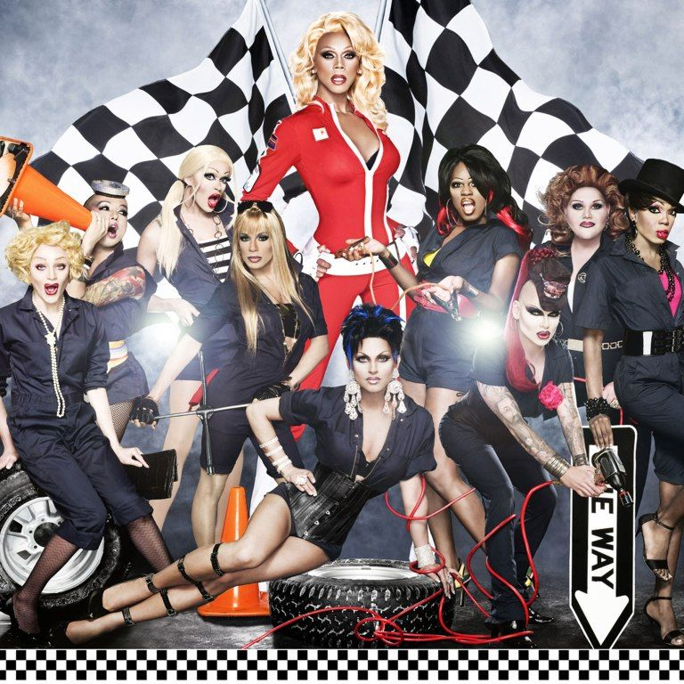
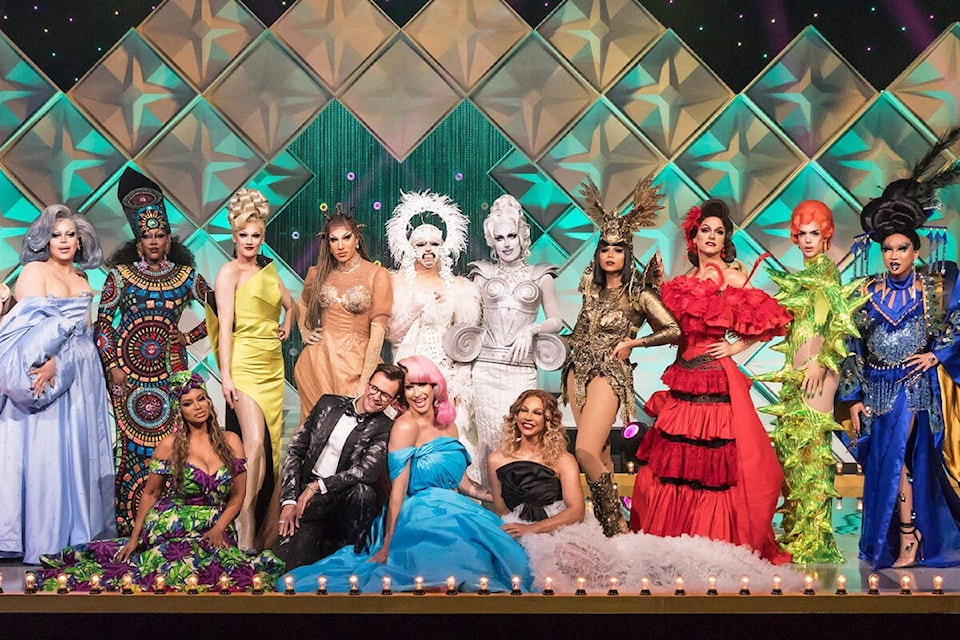
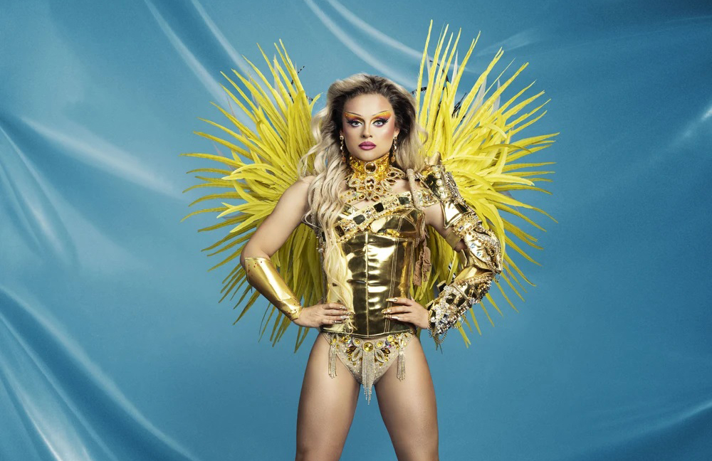

RuPaul: Mother Of Drags.
Não dá pra falar sobre ícones LGBTQ+ sem falar de RuPaul Andre Charles, conhecido simplesmente como RuPaul. Ele é drag queen, apresentador, supermodelo, cantor, escritor, ator e varias outras coisas mais. Sua atividade mais conhecida é a apresentação do reality show RuPaul's Drag Race, ganhador de 26 Emmys. Dê uma lida nesse artigo para aprender muita coisa sobre a Mother of Drags.
O surgimento da Supermodel Of The World
RuPaul nasceu e cresceu em San Diego, na California. Aos 15 anos, mudou-se para Atlanta, Georgia, com sua irmã Renetta para estudar artes cênicas na North Atlanta School of Performing Arts. RuPaul iniciou como músico e diretor de filme em Atlanta, Geórgia durante os anos 1980. Ele participou em filmes undergroud, ajudando à criar o filme de baixo orçamento RuPaul Is: Starbooty! e um álbum com o mesmo nome.
Em Atlanta, RuPaul também performava na boate Celebrity, gerenciada por Larry Tee, como dançarino de bar ou com sua banda Wee Wee Pole. RuPaul também performou como apoio de voz para Glen Meadmore junto com a drag queen Vaginal Davis. Nos EUA, sua primeira aparição a nível nacional foi em 1989, onde apareceu dançando no clipe "Love Shack" de The B-52's.
RuPaul lançou seu álbum de estréia, Supermodel of the World, em 1993. O primeiro single do álbum, Supermodel (You Better Work), se tornou um hit instantâneo, trazendo o reconhecimento mundial de RuPaul. Suas duas músicas seguintes, Back to My Roots e A Shade Shady, lideraram a parada Billboard Hot Dance Music / Club Play. Depois de alcançar uma popularidade altíssima, RuPaul assinou com a marca de cosméticos MAC para ser sua garota propaganda, fazendo dela a primeira supermodelo drag queen.
Surge o programa RuPaul's Drag Race
Em 1996, ele apresentou seu próprio programa de entrevistas, “The RuPaul Show”, transmitido pela VH1. O programa contou com entrevistas de celebridades como Diana Ross, Pat Benatar, Pete Burns e Cyndi Lauper.Na mesma época, ele também foi co-apresentador da rádio “WKTU” com Michelle Visage. Em 2008, ele começou a trabalhar em sua série de reality shows, RuPaul’s Drag Race, onde um painel de juízes experientes selecionaria a próxima “super estrela drag da América”. O show estreou ar em 2009. Esse foi o verdadeiro avanço de RuPaul na indústria, com ele se tornando popular e um defensor ferrenho da comunidade LGBT.
A primeira temporada não foi um grande sucesso. Mas, o canal Logo TV acabou salvando o programa para mais uma temporada. A segunda temporada fez um grande sucesso e conquistou uma grande parcela da comunidade LGBTQ+. Tal sucesso acabou se repetindo em outras temporadas e garantiu a chegada atá a atual 15ª temporada. O sucesso foi tão grande que o programa já recebeu 63 indicações ao Emmys Awards, ganhando 26 vezes, com RuPaul ganhando 7 vezes como melhor apresentador de reality show.
Rupaul's Drag Race conquista o mundo!
O sucesso do reality show gerou a criação de spin-offs e versões internacionais. O primeiro spin-off foi o RuPaul's Drag U, em 2010, que ajudava mulheres a se conectar com sua diva interior por meio de mentorias com queens do programa. Logo após, em 2012, surgiu o mais famoso dos spin-offs o RuPaul's Drag Race All Stars, que traz queens de temporadas anteriores para uma segunda chance de lutar pela coroa. Em 2020 foi lancado o RuPaul's Secret Celebrity Drag Race, que traz pessoas famosas para uma disputa drag por uma causa social.
Falando de versões internacionais do programa, já existem 15 delas espalhadas pelo mundo. A primeira foi o The Switch Drag Race, do chile. Em seguida veio o Drag Race Thailand, apresentado por Art Arya e Pangina Heals; o RuPaul's Drag Race UK, que é apresentado pela própria RuPaul; o Canada's Drag Race, apresentado por Brooke Lynn Hytes, a runner up da 11ª temporada do programa original; e o RuPaul's Drag Race Down Under, uma versão da Oceania, apresentado por RuPaul.
Na Europa temos, o Drag Race Holland, apresentado por Fred Van Leer, que teve a primeira queen brasileira a concorrer no programa, Miss Abby OMG, tendo chegado ao top 4; o Drag Race España, apresentado por Supremme de Luxe, que é uma das versões mais bem avaliadas do programa; o Drag Race Italia, apresentado pela queen Priscilla; o Drag Race France, apresentado pela queen participante da 12ª temporada da versão original, Nicky Doll; o Drag Race Belgique, apresentado pela queen runner up da primeira temporada de Canada's Drag Race, Rita Baga; e o Drag Race Sverige, apresentado por Robert Fux, onde a competidora brasileira Fontana foi a runner up da primeira temporada.
Há também o Drag Race Philippines, apresentado por Paolo Ballesteros, tendo Jiggly Caliente, queen participante da quarta temporada do programa original e da sexta temporada do spin off All Stars; o Drag Race Mexico, apresentado por Valentina, queen participante da nona temporada do programa original e da quarta temporada do spin off All Stars, e por Lolita Banana, queen participante da primeira temporada de Drag Race France. Por fim, finalmente foi anunciada uma versão brasileira do programa, apresentado por Grag Queen, ganhadora da primeira temporada de Queen Of The Universe.
Então é isso! Espero que você tenha gostado deste "resumo" da vida de RuPaul.